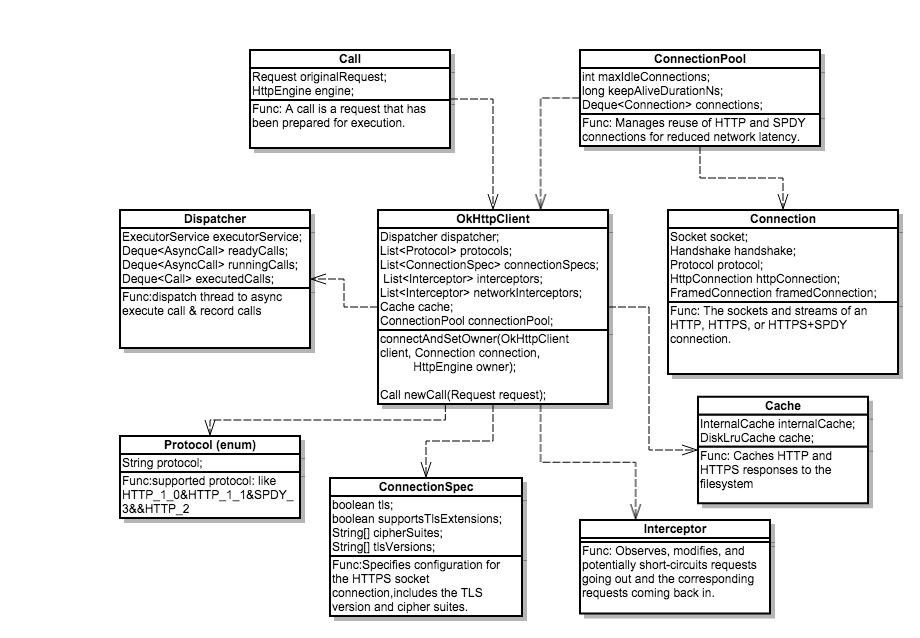
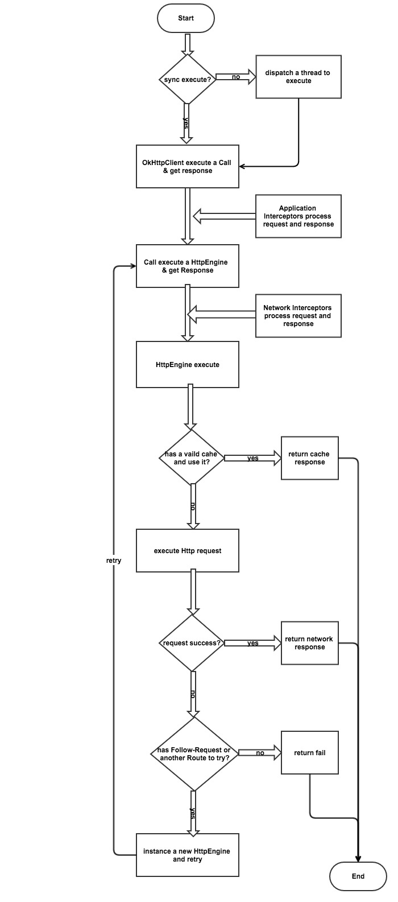
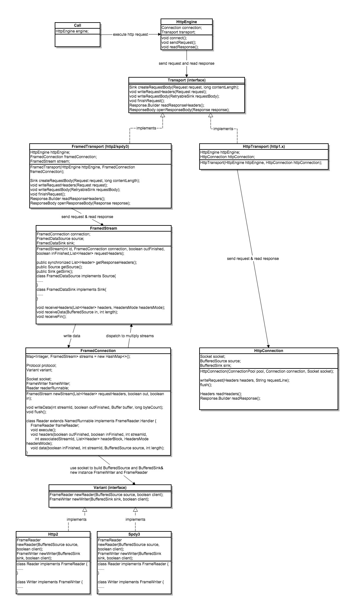

OkHttp源码解析
更新日期:
概述
OkHttp是一款非常优秀的HTTP库，开源的，适用于Android平台。它的官方介绍是：An HTTP+SPDY client for Android and Java applications。作为一个网络请求库，它封装了HTTP和SPDY协议，并提供了极其易用的接口给开发者调用。如果你不知道SPDY协议，可以维基百科一下。这篇文章主要说的是源码解析，如果想了解OkHttp的用法，可以移步到这篇文章看看：Android OKHttp 使用方法。另外，这里有一篇讲述effective-okhttp的文章，也可以看看。下面分别从核心类、执行流程、调用关系、连接、并发几个方面解析OkHttp。
OkHttp有两个大的角色：OkHttpClient和Call。OhHttpClient相当于Http的客户端，为当前应用的所有http请求服务的。它为所有http请求提供必要的配置和信息，并管理所有的Call。Call则是针对单个http请求，每个http请求都被封装成一个Call。
OkHttpClient。
下图是OkHttpClient的类图。

上图中，主要列出了OkHttpClient包含的一些重要的类。每个类我列出了三条信息：类名、变量、功能。这些类服务于http请求的各个阶段。
- Dispatcher 此类有两个功能：为异步http请求提供线程；管理并记录每一个Call的状态。
- Protocol 此类指定了客户端支持哪些应用层协议，包括：HTTP1.0、HTTP1.1、HTTP2.0、SPDY3.
- ConnectionSpec 此类主要是为加密请求HTTPS服务的。它说明了当前客户端是否支持tls，是否支持yls扩展，支持的密码套件和tls版本。
- Interceptor 拦截器。这个类作用是对http request和response的预处理。在OkHttp中，有两类拦截器：应用层拦截器和网络拦截器。他们各自的调用时机在下面流程图中会讲到。
- Cache 对http请求的response进行缓存。当执行一个http请求时，若本地有缓存，则OkHttpClient会增加两个头部字段信息If-Modified-Since、If-None-Match，如果服务器数据没有更新过，则会返回code304告诉客户端使用缓存。否则返回最新的数据。
- ConnectionPool 此类管理了客户端所有的Connection。当执行一个http请求时，如果有可以复用的Connection，则直接拿来复用。否则，尝试建立一个新的Connection执行http请求。
- Connection 一个基于Socket的与服务器的连接。但不同的上层协议，读写数据的连接的实现是不一样的。Connection封装了握手信息、协议以及根据协议建立的读写连接。读写连接有两种：FramedConnection、HttpConnection。
- Call 一个Call对应一个http请求。它包含两个重要变量：original request和HttpEngine。HttpEngine是真正执行http请求操作的类。后面会详细讲述。
流程图。
下图是OkHttp执行http请求的流程图。

当一个Call生成被执行时，会按照上图流程执行。
- 判断是同步请求还是异步请求，如果是异步请求，则需要dispatch一个线程去执行。
2.开始执行Call。这时候，应用层拦截器会对request进行预处理。 - 应用层拦截器预处理结束后，HttpEngine会执行。
- HttpEngine会对检查是否有当前请求的缓存。如果存在，并且缓存有效，则直接返回缓存；如果缓存不一定有效，则发起一个conditional GET请求。如果不存在缓存，则直接网络请求数据。
- 执行网络请求，向socket写入数据，等待回复。
- 若请求成功，则返回response。若请求不成功，则需要判断不成功的原因并进行处理。不成功的原因有两种，第一、当前请求的URL被移除了，服务器返回了一个带有新URL的response。这时候，OkHttp会对这个新的URL发起请求。第二、当前请求的IP地址不可达。这时候，如果当前的URL地址还有可选的IP地址，则okHttp会使用新的IP构造Route尝试连接，并发起请求。如果没有IP地址可以尝试，则返回请求失败。
HttpEngine
顾名思义，它是http请求的引擎。http请求的完整过程都发生在这里。下面会针对HttpEngine的内部调用流程作详细分析。连接和并发这些操作都发生在这里。

上图是HttpEngine内部调用关系图。
- HttpEngine HttpEngine首先会调用connect()获得一个与服务器的连接。这个连接可能来自连接池，也可能是自己建立的。然后通过connection获得一个Transport的实例。这个实例其实在建立连接的过程中产生的。接下来，就通过这个transport发送数据并接受response。
- Transport 对于不同的协议，Transport有不同的实现。FramedTransport用于http2和spdy3，HttpTransport用于http1.x。这里需要说明一点，对于同一个Address，http2和spdy3是共用连接的，而http1.x是一个请求对应一个连接。
- FramedTransport FramedTransport通过FramedConnection获得当前http请求的FramedStream，然后向FramedStream发送请求和读取回复。由于http2和spdy3是共用连接的，所以FramedConnection与FramedStream是一对多的关系。
- FramedConnection FramedConnection会根据不同的protocol构造不同的变体：Variant。然后使用socket构造BufferedSource、BufferedSink，并将BufferedSource和BufferedSink传入Variant，获取FrameReader、FrameWriter。有了FrameReader、FrameWriter，就可以向具体的协议实现类写数据和读数据了。
- Variant 根据不同的protocol实现不同的Variant。Http2和Spdy3就是http2和spdy3的具体实现。里面实现了对应协议写数据和读数据的约定格式。
- HttpTransport 这是实现了http1.x的Transport。由于http1.x是一个请求对应一个Connection，没有共用机制。所以，比较简单。HttpTransport调用HttpConnection发送请求和读取回复。
- HttpConnection HttpConnection通过socket构造BufferedSource、BufferedSink，并通过BufferedSource、BufferedSink写入和读取数据。
并发
下面所讲的并发是针对spdy3和http2协议的。
- Blocking APIs
Android原生自带的HttpURLConnection是阻塞式的。write request和read response都是阻塞式的。阻塞式APIs是非常易用的。因为它是重头到尾连续完成的，没有回调。阻塞式APIs由于需要线程等待网络回应，效率也是比较低的。 - Framed protocols
[1]每一个应用层线程都希望在自己的stream阻塞，但类似spdy/3和http/2的框架协议是不允许阻塞的，因为spdy/3和http/2协议是多路复用同一个socket。因此，需要协调多个应用层线程的stream共享socket。[2]框架规则决定了spdy/3和http/2无法实现单线程的阻塞。flow-control特性介绍了在writes和reads之间的回调，需要让writes知道reads、reads限制writes。[3]OkHttp在框架协议之上实现了阻塞APIs。 - 线程
- 应用层calling thread
[1]应用层必须阻塞在写IO上。应用层线程必须将所有数据写进socket才能返回。如果写失败了，是无法通知应用层IOException。[2]应用层也可以阻塞读IO（当然，也可以以回调的方式不阻塞）。当应用层以阻塞的方式去读IO时，有三种情况下返回：socket有数据、stream关闭、超时。当socket有数据并且没有对象去读取时，这些数据会缓存起来，直到有应用来读取。并且不会因为flow-control而丢弃这些数据。[3]假设一个场景，应用层基于http/2读取一个视频流。当用户点击暂停并且应用会停止读取stream，这时候缓存区就会满，这时候flow-control会阻止server向stream发送数据。当用户恢复播放时，缓存区被读取完，这时候服务器会恢复，继续传输流数据。 - 共享读线程
[1]不能依靠应用层线程读取socket数据。因为应用层线程不会持久做读取工作。而socket的读取工作是持续的：因此，对于每一个socket，都需要一个专门的线程去读取数据，然后分发给Stream。[2]读线程不能回调应用层代码。如果回调了，耗时较长的应用层读stream代码将会导致整个connection挂起。[3]读线程不能阻塞写数据。如果客户端和服务器都用读线程去写数据，并且阻塞在这上面，可能导致socket的缓冲区填满，永远无法被读取。 - Do-stuff-later pool
有些事情不是读线程该做的，比如，回调应用层、回复一个ping。这些事情会封装成一个Runnable，加入executor队列，被executor某一个线程执行。
- 应用层calling thread
- Locks
OkHttp有三种操作需要锁同步。- FramedConnection
这个锁保证了每一个Connection内部状态正确。阻塞操作不会持有这个锁。流程是这样的：获取这个锁，对一些fields做读或写操作，然后释放这个锁。没有IO和应用层回调操作。 - FramedStream
这个锁保证了每一个Stream内部状态正确。阻塞操作不会持有这个锁。当应用层线程阻塞在读IO上，OkHttp会调用wait/notify，当wait()被调用，锁会被释放。 - FrameWriter
这个锁保证了socket写状态的正确。某一时刻，仅有一个stream可以向socket写数据。要么是上层线程或者Do-stuff-later pool线程执行写操作。 - 同时持有多个锁
在持有FrameWriter锁的前提下，可以同时持有SpdyConnection的锁。但反过来不可以，因为去持有FrameWriter锁会阻塞导致SpdyConnection锁被释放掉。
- FramedConnection